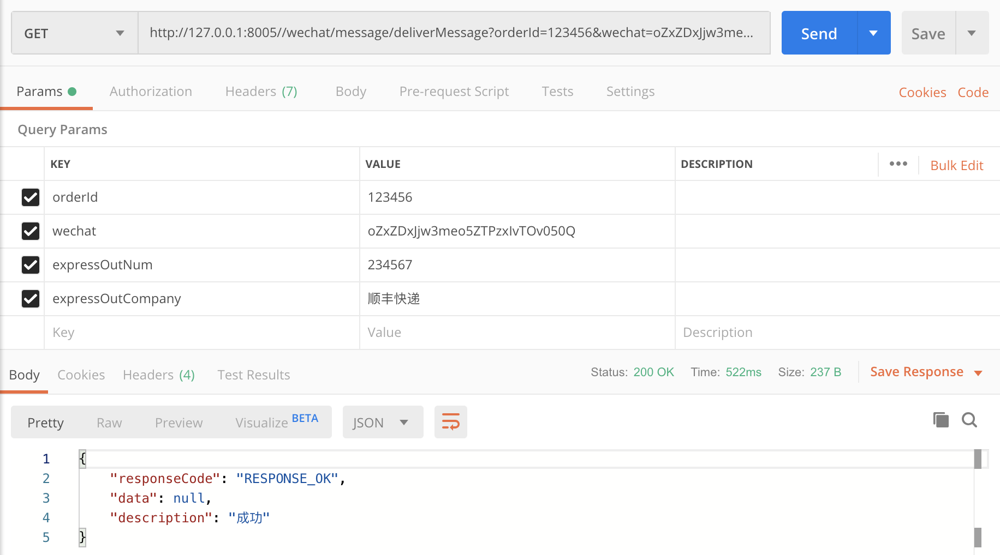
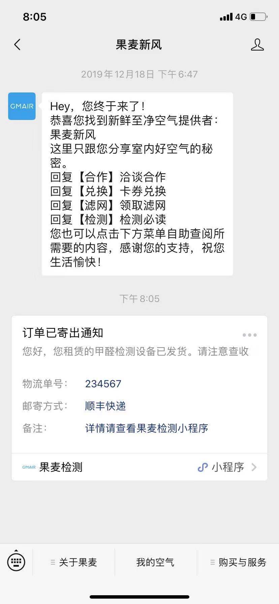
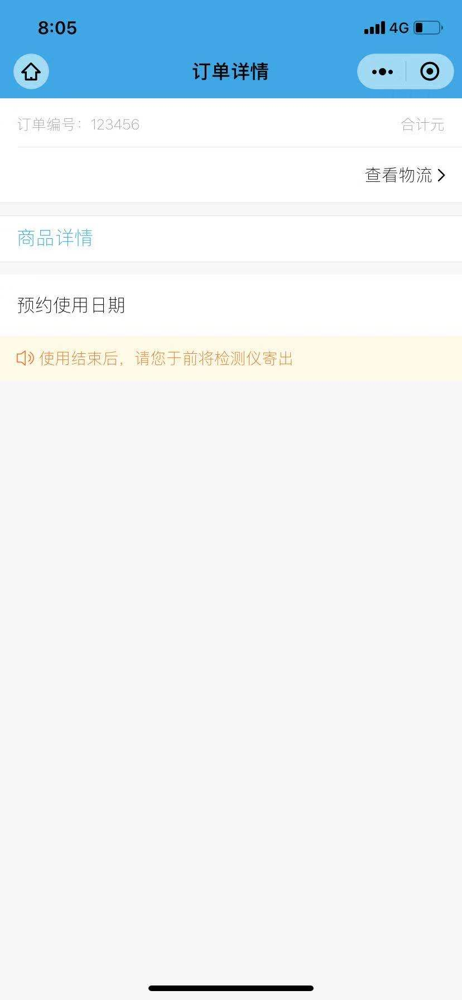
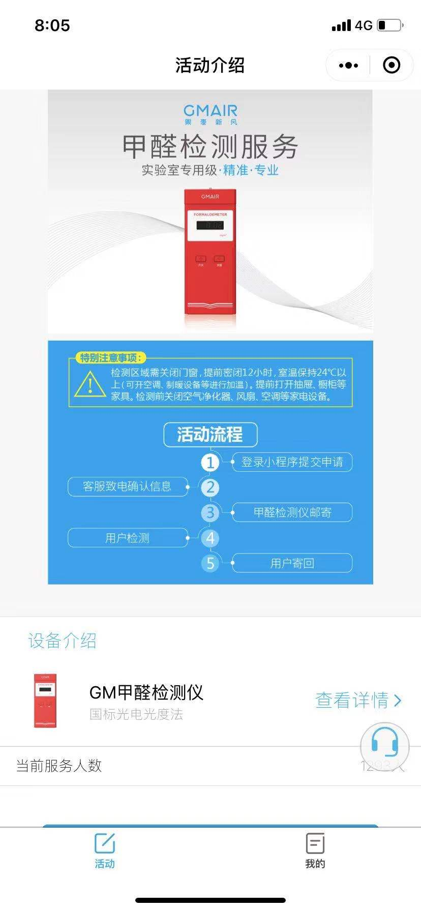

前言
2019的最后一次总结了，同学老哥在我准备面试的时候单独完成了这一次的开发任务，内容非常多也克服了很多的难点，即使作为一个划水人员还是要好好总结的。
这次主要实现的功能是调用微信提供的微信公众号推送api实现公众号的消息推送，并且在业务逻辑上需要多个微服务的数据进行通信完成功能。这次也是做好总结，方便回顾学习，温故而知新。
需求
功能：
调用wechat模块的推送接口，参数列表自定，推送的信息–>代码逻辑业务功能如下：
订单确认、发货、寄回、归还
1)确认、发货、寄回：按照（orderId等等参数列表，越多越好）返回信息
2)归还：接口判断日期如果是最后一天才按照orderId返回信息
学习总结
腾讯提供的api功能
腾讯提供的微信官方文档非常全面，本次开发涉及的公众号消息推送也做了非常详细的说明
https://developers.weixin.qq.com/doc/offiaccount/Message_Management/Template_Message_Interface.html
首先公众号消息推送的大致流程是：
在微信公众平台设定好所属行业（不同行业有不同的消息模板）–> 获取模板列表 –> 消息模板代码实现 –> 将模板代码作为json数据推送到微信提供的url
使用的推送类HttpClientUtils，将模板代码作为json数据推送到微信提供的url，可用
1 | public class HttpClientUtils { |
拼接模板消息的json代码和推送模板
1 | JSONObject jsonObject = new JSONObject(); |
1 | { |
微服务之间的方法通信
微信提供的api是通过一个微信用的微信号（并不是微信界面能看到的微信号，代码端的微信号是一串序列，与前者对应但是具有保密功能），但是本次开发的业务逻辑能够作为参数的是订单号。
所以业务流程需要我们先通过订单号（orderId）去「drift微服务」对应的db中获取用户的电话号码（phone_number），然后再拿着这个pn去「auth-consumer」微服务对应的db中获取用户的微信号（wechatId）+ 「wechat」微服务对应数据库中的token，最后调用推送的方法接口进行消息推送。总结各微服务模块的参与：
drift微服务：开端，接口方法接收订单号（orderId），db中的数据查询返回：订单号（orderId）-> 电话号码（phone_number）。然后调用其他微服务的方法服务。
auth-consumer微服务：提供方法接口接收电话号码（phone_number），db中的数据查询返回：电话号码（phone_number）-> 微信号（wechatId）
wechatId微服务：提供方法接口接收微信号（wechatId），db中获取token（不用在意token刷新，刷新由其他模块负责），将微信提供的推送api与token拼接成目标接口url，最后调用推送类向接口url发送需要微信公众号推送的请求。
微服务之间的通信可以通过 @FeignClient注解实现，拿推送模块举例
1 | @FeignClient("wechat-agent") |
结果展示




总结
再次感谢同学，老哥是用一周的时间就学会了微信公众号的推送，并且通过交流请教我也因此受益，花费比较少的时间成本少走了很多弯路就大致搞懂了功能的实现。对于一线互联网公司的面试让我了解到，很多技术光会使用还是差得很远，还要了解背后的原理，不然难以成长为一个优秀的开发者，希望自己能多了解原理，收获更多真正的知识。